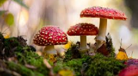
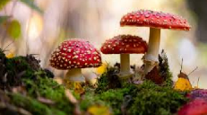

Os organismos pertencentes ao reino Monera são procariotos e unicelulares que podem formar colônias ou não. Por organismos procariotos, entende-se aqueles que possuem células que não têm núcleo definido, com o material genético disperso pelo citoplasma. Além de não apresentarem núcleo, as células procarióticas não possuem organelas membranosas, o que significa que elas não têm estruturas como mitocôndrias, complexo golgiense e retículo endoplasmático, típicas das células eucarióticas.
Os representantes dos protistas costumam ser divididos em dois grupos principais: protozoários e algas. Os protozoários são organismos eucariontes que apresentam nutrição heterotrófica. As algas, por sua vez, apresentam nutrição autotrófica. Vale salientar que atualmente muitos biólogos classificam as algas verdes, juntamente com as briófitas e plantas vasculares, em um grupo denominado plantas verdes ou viridófitas.
Os fungos são organismos heterotróficos e eucariontes que podem ser unicelulares ou multicelulares. A grande maioria das espécies é filamentosa, sendo esses filamentos denominados de hifas. Alguns fungos são formados por várias hifas densamente unidas, que formam o chamado micélio. O micélio pode ser observado em cogumelos, por exemplo.
Os animais representam a grande maioria da biodiversidade de seres vivos da Terra, existindo, atualmente, mais de 1 milhão de espécies descritas, sem contar as que ainda não foram descobertas pela ciência. Todos os representantes desse grupo são multicelulares e a estrutura de suas células é complexa e envolta por uma membrana nuclear, sendo denominados de eucariontes. O modo de nutrição desse grupo é heterotrófico, o que faz deles organismos que necessitam ir em busca de seu próprio alimeno.
A estrutura básica das plantas terrestres inclui raiz, caule e folhas. A característica visível mais marcante desse grupo é a típica cor verde das folhas, que ocorre pela presença da clorofila, substância relacionada à fotossíntese. As plantas estão entre os principais produtores primários da Terra, utilizando a energia solar no processo de fotossíntese e fornecendo energia para ecossistemas inteiros.

 
